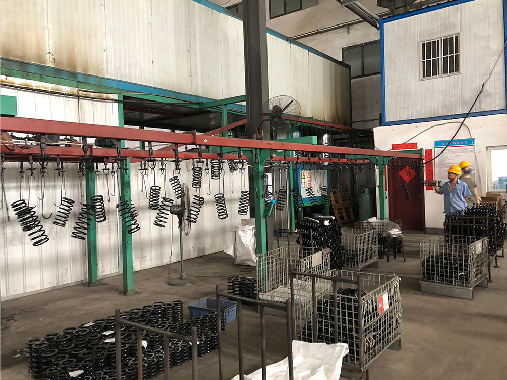

Spring production process （Spring production line）
2021-03-08 18:57:17
- TAG :
Spring production process （Spring production line）
The process is the procedures, methods and skills in the production process. It reflects the technical level in the production activities. What we call the process flow is to take into account the two factors of safety and economy at the same time, and combine our design ideas to make a A series of sequential operations that are more reasonable and more in line with the current situation and future development of production methods.
The production process of the spring is a series of production methods that meet the necessary characteristics of the product formulated according to the requirements of the use of the spring.
Regarding the production of springs, there are many steps involved. The general process flow is: winding-heat treatment-end treatment-strengthening treatment-surface treatment.
1. Winding : This is the primary equipment for springs,In the automatic spring coiling machine, it is necessary to ensure the diameter, total number of coils, end turns, helix angle, free height, direction of rotation, and pitch requirements as required by the process.
2. Heat treatment: This is for stress relief annealing. For cold drawn carbon spring steel wire and oil-quenched steel wire, it has the strength required for spring processing, but it is necessary to eliminate the residual stress generated by winding, stabilize the spring size, and improve the tensile strength and elastic limit of the steel wire.
3. End face treatment: In order to ensure the verticality of the compression spring, the end faces of the two support rings are kept in contact with other parts to reduce deflection and ensure the characteristics of the main machine. Generally, both ends of the compression spring must be ground. Generally, automatic grinding is used.
4. Strengthening treatment: In order to make the spring surface produce residual stress opposite to the working stress and improve the bearing capacity and service life of the spring, some strengthening measures are taken during the manufacturing process, such as strong pressure, standing treatment, shot peening.
5. Surface treatment: In order to improve the corrosion resistance of the spring, or aesthetics, the surface of the processed spring is treated. Commonly used surface treatments include spray paint, electrophoresis paint, black powder coat finish， electroplating, blackening and oxidation, and galvanizing.
Luoyang Xianheng Spring Machinery Co.,Ltd.
https://springcoiling.com/
